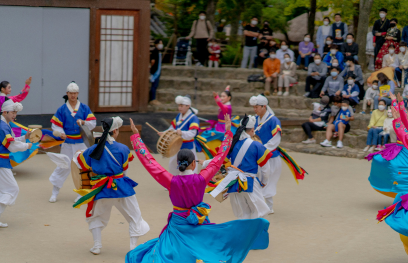
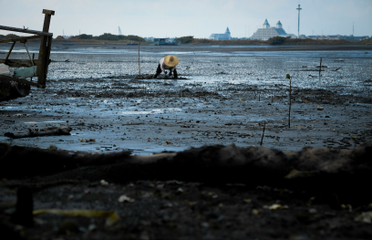

청산도 일상풍습
청산도에는
이미 세상에서 사라져버린 것들이 고스란이 남아 있습니다.
빠르게 변하는 세상 속에서 아무곳에서나 볼 수 없는 귀한 보물이 천년의 가치를 두고 이곳에 있다.
-
청산도 장례문화 꽃상여
꽃상여의 사귀에 묶은 하얀 천을 호방상이라 하며,자기 명에 가면 천이 처지고 자기 명에 못 가면 천이 하늘로 뜬다는 설이 있다.
-

도락리 정월굿
청산도 도락리 정월굿은 마을의 잡귀를 쫓고 풍년과 풍어를 기원하며 주민의 무사안일을 염원하는 굿이다.
-

도락리 갯영 공표
마을에서 공동관리하는 갯바탕 중 일정 구역을 적절한 시기에 1일 개방하여 주민 모두가 골고루 취할 수 있게 하는 마을 규칙이다.
청산도 관광명소
靑山八景(청산팔경)은 기정란 정지회(旗亭蘭 亭之會)란 연락계원(청산유림)들이 白蓮寺(절)에 모여서 청산도의 여덟군데 아름다운 경치좋은 곳을 골라 시를 읊으며 지은데서 유래한다.
-
2경 오산낙조
오산낙조의 주제는 빛(노을)이며 그 빛이 광활한 대지를 비추는 장면이다. 날씨 좋은날 1년에 하루나 이틀 볼 수 있는 장면이다.
-
3경 대봉연사
오산낙조의 주제는 빛(노을)이며 그 빛이 광활한 대지를 비추는 장면이다. 날씨 좋은날 1년에 하루나 이틀 볼 수 있는 장면이다.
-
서편제촬영지
오산낙조의 주제는 빛(노을)이며 그 빛이 광활한 대지를 비추는 장면이다. 날씨 좋은날 1년에 하루나 이틀 볼 수 있는 장면이다.
-
어촌체험마을
오산낙조의 주제는 빛(노을)이며 그 빛이 광활한 대지를 비추는 장면이다. 날씨 좋은날 1년에 하루나 이틀 볼 수 있는 장면이다.